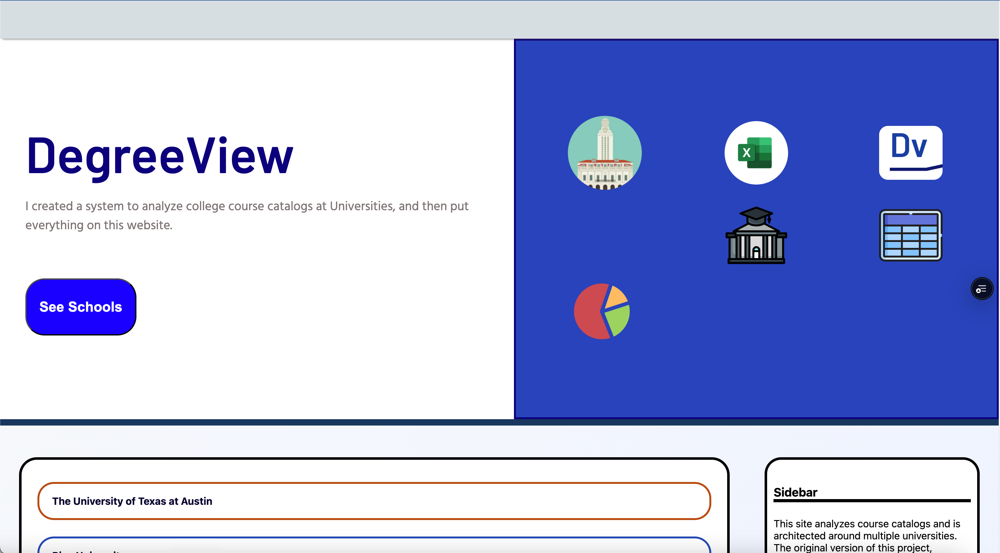

- Designed a flexible multi-university system analyzing 90,191 courses across 1,262 departments from 10 universities.
- Utilized OpenPyXL, mermaid.js, bs4, requests, os, csv, json, and pillow python libraries, mermaid.js for graph generation, and SQLite3 for queries.
- Built responsive and functional web pages tables that includedwave like animations
- Implemented Google Analytics: reached roughly 2.5K users, 15.5K page views, and 600+ file downloads